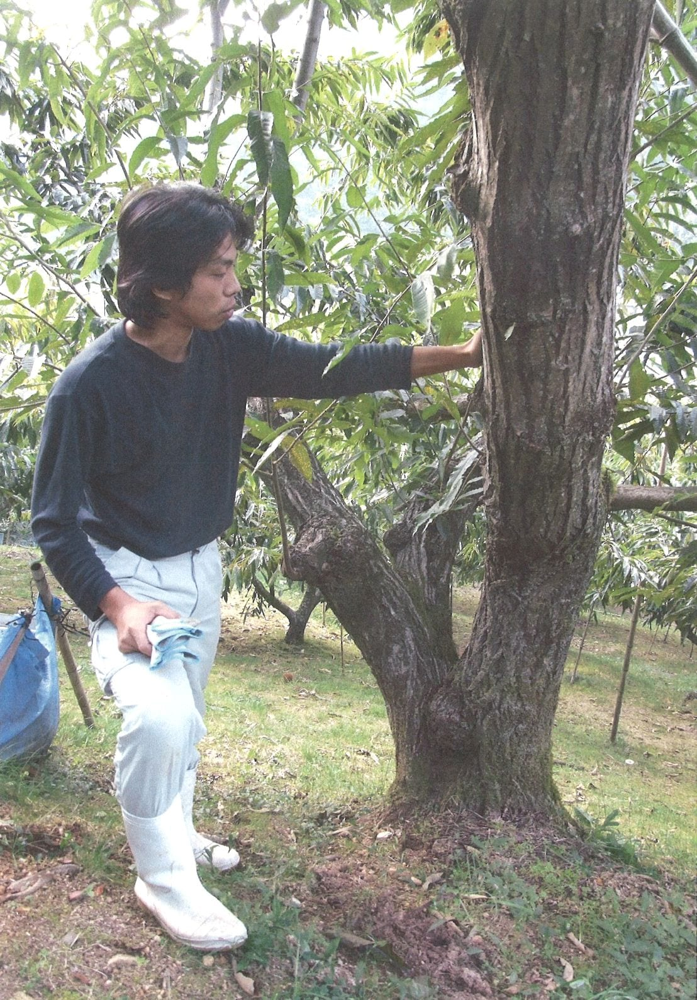

小屋敷クオリティ、5つのこだわり
華やかな言葉ではなく、積み重ねた圧倒的な手数でできている。大玉率およそ9割という驚異的な品質を支える、小屋敷クオリティの設計図をご紹介します。
大玉への栽培
冬の厳しい寒さの中での剪定や、春から夏にかけての徹底した摘果は当然のこと、さらに成長した実の重みで枝が折れてしまわないよう、園地全体に約2,500本もの「添え木」を手作業で施します。これにより、栄養が若い枝の先々にまで余すことなく行き渡り、毎年安定して手のひらを覆うような大玉を実らせることができます。木に余計な負担をかけない丁寧な管理体制こそが、不作の年を作らない安定供給の秘訣です。
苗づくり
私たちは、市場に出回る苗木に頼ることをやめました。栗の実から自然に芽吹いた「自生苗」を植えたい場所へ直接植え付け、その場で優れた品種を接ぎ木するのです。こうしてゼロから育てることで、木はその土地の土壌や気候に完全に適応し、他に類を見ない生命力あふれる一本へと成長します。
土づくり
化学肥料は必要最小限にとどめ、冬の剪定で落とした枝をウッドチップへと加工して再び園地の土へと還す、土を育てる循環を大切にしています。さらに、園地の木々や一面を青々と美しく覆う自然の「苔」が、真夏の厳しい直射日光と乾燥から栗の非常にデリケートな根を優しく守ります。この苔の働きにより土壌はふかふかに柔らかく保たれ、夏の草刈りの手間も大幅に削減されています。その土壌の豊かさは、本来なら実をつけにくいK2(改)俗称が、大粒でたわわに実る姿となって証明されています。
一年中、届ける
栗は殻に守られているため頑丈そうに見えますが、実際は非常にデリケートな「野菜」と同じ性質を持っています。そのため、収穫後は速やかに自家で一粒ずつ手作業で丁寧に皮をむき、新鮮な状態のまま真空パックに収めて冷凍保存します。この冷凍技術により、最も美味しい瞬間の鮮度と濃厚な風味を閉じ込め、旬が過ぎてからも極上の味わいを損なうことなく通年で皆様へお届けすることが可能となりました。
一粒ずつの検品
機械的な選別ラインによる確認だけに頼ることはありません。最終工程では、必ず熟練のスタッフの手作業によって一粒ずつ、虫食いや小さな傷、変色がないかを厳しく丁寧に検品します。少しでも私たちの求める高い品質基準に満たないものは、容赦なく徹底して除外します。この厳しい最後の砦を経て、自信を持って誇れる美しい栗だけをお客様の元へと送り届けています。

木と向き合い、世代をつなぐ
園地に立つ一本一本の木の状態をつぶさに観察し、それに合わせた剪定を施し、独自の接ぎ木によって世代を更新していく。この栗の木との絶え間ない対話と地道な手仕事の継続こそが、大玉率およそ9割という安定した品質と、途絶えかけていた幻の系統「K2(改)俗称」を守り続けるための揺るぎない土台となっています。

剪定から検品に至る私たちのこだわりは、すべて3L以上の大玉「銀寄・石鎚・大峰・筑波」をお客様に届けるという、ただ一つの約束のためにあります。その技術の粋の先に、もし出会えたなら幸運な、幻と呼ばれる一粒「K2(改)俗称」もまた存在するのです。